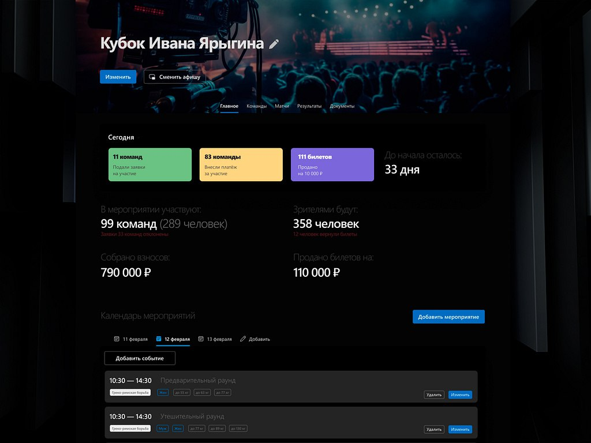
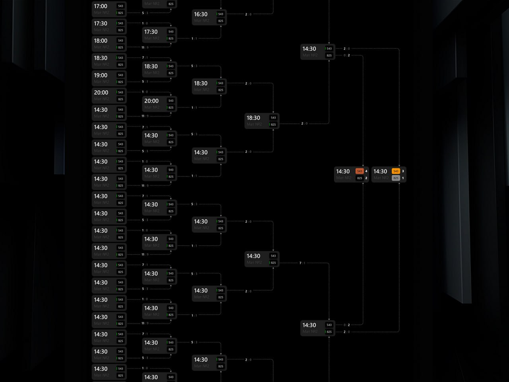
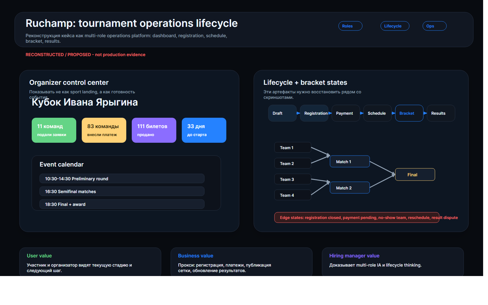

Разные входы в один продукт
Спортсмену нужен следующий шаг по заявке, организатору — контроль готовности, зрителю — понятная публичная страница.
Я проектировал спортивную платформу как операционную систему события: от выбора роли и регистрации до кабинета спортсмена, дашборда организатора, расписания, турнирной сетки и публикации результатов. Главный фокус — не страница турнира, а единый жизненный цикл. Иначе все быстро уезжает в ручную координацию.

Спортивное событие одновременно видят организатор, спортсмен, команда, зритель, судья и администратор. Для одного это регистрация и заявка, для другого — готовность мероприятия, для третьего — сетка и результаты. Если статусы расходятся, событие быстро превращается в ручную координацию в чатах.
Спортсмену нужен следующий шаг по заявке, организатору — контроль готовности, зрителю — понятная публичная страница.
Регистрация, оплата, расписание, сетка, результат и публикация должны быть связаны, а не жить как отдельные страницы.
Дашборд должен показывать не красивые карточки, а готовность события: заявки, категории, билеты, дни до старта и проблемные места.


Я собрал интерфейс вокруг жизненного цикла события. Пользователь не должен заново понимать продукт на каждой странице: роль, заявка, готовность, расписание, сетка и результат связаны одним статусным потоком.
Движение связывает разные поверхности в один операционный цикл: регистрация, готовность, расписание, сетка и публикация результата. Если анимация не объясняет смену статуса, она не нужна.
Переход показывает смену статуса без потери страницы события.
Оплаты, билеты, категории и расписание читаются как операционный контроль.
Переход объясняет, почему участник продвинулся дальше.
Публичная и админская роли видят одну актуальную версию результата.
Сценарий показывает, как событие проходит путь от заявки до результата, а разные роли остаются в одном статусном контексте.
Организатор, спортсмен, команда и зритель быстрее понимают стадию события и свое следующее действие.
Ясная модель жизненного цикла должна снижать количество вопросов по регистрации, категориям, оплатам, расписанию, сетке и результатам. Нужны подтверждения из поддержки или аналитики.
Кейс показывает работу с ролями, статусами, публичными страницами и административными сценариями внутри одного продукта.